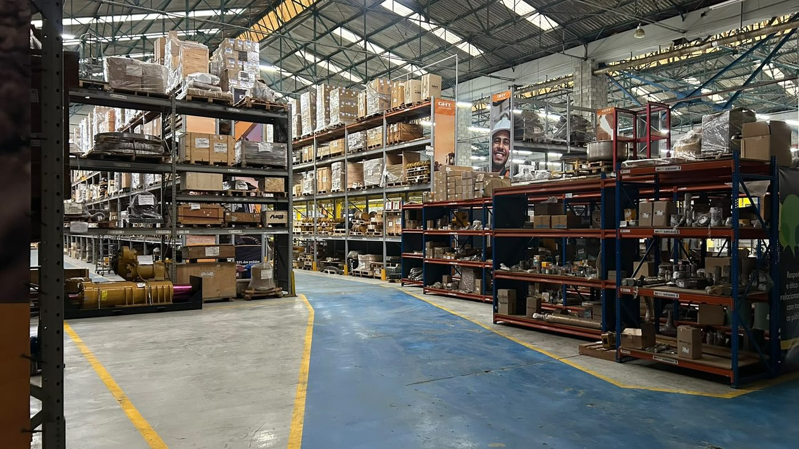

Transferência de estoque UNION → CDSP
Projeto com prazo e muitas interdependências: mais de 37 mil unidades e 1.611 tipos de itens, com conferência e conciliação na chave produto + fornecedor.
Padronização do endereçamento da UNION
Proposta minha, aprovada pela gerência. As locações seguiam um código sem ordem; o novo padrão segue rua, módulo e nível e já é reconhecível por um futuro WMS/SAP.
AntesSURxxxCyy
AgoraURuaMóduloNível
U = UNION, no mesmo padrão do novo galpão
